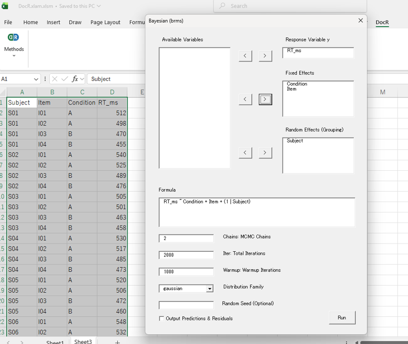
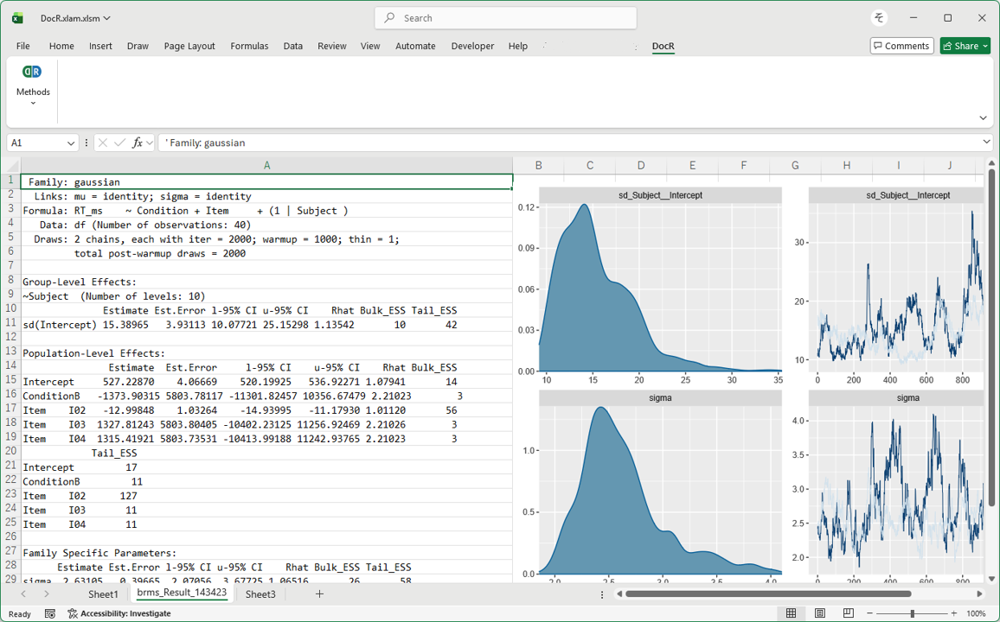

DocR
Quick Diagnosis, Deep Insights.
DocR is a tool that allows you to easily run robust R analyses, such as brms, directly in Excel. It is designed to be user-friendly for everyone, from beginners to heavy R users.
Smooth "First Steps" in Data Analysis
- Run advanced statistical models intuitively.
- Use the output as a reference when sharing results with AI to discuss interpretations and next steps.
- DocR's accessibility helps you become more comfortable with data analysis.
Quick, On-the-Spot Handling of Diverse Data
- Grasp the structure of various datasets received from different sources right on the spot.
- Save the effort required for preliminary analysis and assessing the data's current state before moving to full-scale analysis.
- Enjoy the flexibility that makes it highly usable even for heavy R users.
User Interface (Complete Everything within Excel)
A "DocR" menu is added to your familiar Excel ribbon. Just select variables and click; R runs in the background and outputs the results to a new sheet.


List of Available Analytical Features
- Linear Regression (lm) - Simple / Multiple Linear Regression
- GLM (glm) - Generalized Linear Models
- ANOVA (afex) - Analysis of Variance
- Linear Mixed (lmer) - Linear Mixed Models
- Bayesian (brms) - Bayesian Hierarchical Models
- Factor Analysis (fa/principal) - Exploratory Factor Analysis / Principal Component Analysis
- SEM / CFA (lavaan) - Structural Equation Modeling / Confirmatory Factor Analysis
- LPA / LCA (tidyLPA/poLCA) - Latent Variable Models
- Text Analysis (Japanese only) - Correspondence Analysis, TF-IDF, Word Frequency, Co-occurrence Network, Word Cloud
Now supports Mac!
Installation Guide
✔ Please install Docker first, and then install the DocR add-in.
✔ Even if you already have R installed, DocR will not interfere with your existing environment.
Step 0: Install Docker
Docker Desktop Download Page
- Download by clicking the white "[Download Docker Desktop]" button.
- You can leave the checkboxes as default during the installation process.
- You may be prompted to register a user account, but you can safely click "Skip".
Step 1: Install DocR
Download for Windows: DocR_Win_0_9_0.zip
Download for Mac: DocR_Mac_0_9_0.zip
-
Run the
Install_DocR.bat (For Mac, Install_DocR_Mac.command) located in the extracted folder.
If you see a blue warning screen (Windows protected your PC) on Windows
Click the "More info" text link within the message, and then click the "Run anyway" button that appears at the bottom right.
If you see an "unidentified developer" warning on Mac
Do not double-click. Instead, right-click (or Control-click) the file, and select "Open" from the context menu to run it.
- The installation is complete when "
DocR.xlam has been successfully installed." is displayed.
Step 2: Enable the Add-in in Excel
Windows
- In Excel, click "File" > "Options" > "Add-ins".
- Select "Excel Add-ins" from the Manage dropdown menu, click "Go...", and check the box for "DocR".
Mac
No action required. It will appear in the menu automatically.
User Manual
Basic Specifications & Notes
- Basic Operation: Select the data cell range and click the analysis button.
- Variable Names: The first row of the selected range is automatically treated as the header. Parentheses like "()" can also be used.
- Editing Formulas: For some analyses, you can directly edit the model formula.
- Result Output: The output is basically the result of R's
summary. There may be some additions or modifications.
Tips for Learning & Analyzing with AI
Asking AI how to set up an analysis or interpret results is highly effective. Give it a try!
Prompt Example: Consulting on Analytical Methods
Participants evaluated attractiveness after smelling three different scents (Odorless, Floral, Citrus). There are 30 participants, and the data is in Excel with the variables: "Participant ID", "Scent Condition", "Photo ID", and "Attractiveness Score". I want to analyze this using lmer in R. What should I specify for the fixed and random effects?
Prompt Example: Interpreting Outputs
I got the following results using brms in R: [Paste results here]
What does this mean? What is the 'R-hat' in the summary?
Prompt Example: Reducing Manual Work
I'm considering the following structure: ... (omitted) ... Please write the R lavaan syntax to test this structure.
Created with the concept:
"Anyone can become a Bayesian analyst today."
Frequently Asked Questions (FAQ)
Is it free to use?
Yes, it is completely free to use. Our goal is to contribute to the advancement of research and education worldwide.
Can it handle complex models?
Yes, advanced users can directly edit the model formula text area to run customized models as desired.
Is there a Mac version?
Yes. However, I managed to develop it on a borrowed Mac, so I need to buy my own Mac for this project...
Why doesn't DocR conflict with my existing R installation?
This is because DocR runs R within an isolated "Docker container" rather than installing it directly on your OS. Consequently, you never have to worry about library dependencies or version conflicts.
What is the blue window that appears upon startup?
It is the Docker terminal window used for the backend. You may safely close it once the application has fully launched.
How should I cite this software?
Please cite it as follows:
Matsushita, S. (2026). DocR: An Excel Gateway to Containerized R Environments. Available here.
Who developed DocR?
It is developed by a Japanese researcher.
I found a bug. What should I do?
Please report it using the feedback form.
Bug Reports & Feedback
We welcome bug reports and feature requests to help improve DocR.
Report Form
Terms of Use / 利用規約
Terms of Use (English Version)
Thank you for using "DocR". By downloading or using this software, you agree to the following terms.
1. Grant of License
This software is provided free of charge for academic research, educational, and personal use only. This includes non-commercial research activities within private research institutions.
2. Prohibitions
Please respect the current format of the software (e.g., locked VBA project). The following actions are strictly prohibited:
- Attempting to view, modify, reverse-engineer, or unlock the source code of this software.
- Redistributing, sublicensing, or selling all or part of this software without prior permission from the developer.
- Creating and publishing commercial content (including monetized instructional videos, paid seminars, or publications) where the primary content is the operation or utilization of this software.
- Using the software for commercial purposes (please contact the developer if you wish to do so).
3. Disclaimer of Warranty and Liability
This software is provided "as is", without warranty of any kind, express or implied. In no event shall the developer be liable for any claim, damages, or other liability, including data loss or business interruption, arising from, out of, or in connection with the software or the use or other dealings in the software. Users are responsible for verifying the validity of their analysis results.
4. Copyright
All copyrights and intellectual property rights related to this software are retained by the developer (Soyogu Matsushita).
Date of Enactment: March 17, 2026
Applicable Version: DocR v0.8
利用規約（日本語版）
本ソフトウェア「DocR」をご利用いただきありがとうございます。本ソフトウェアをダウンロードまたは利用することにより、以下の条項に同意したものとみなされます。
1. 利用許諾
本ソフトウェアは、学術研究、教育、および個人利用の目的に限り、無償でご利用いただけます。民間企業の研究所等における非営利目的の研究活動での利用もこれに含まれます。
2. 禁止事項
本ソフトウェアの提供形態（VBAプロジェクトの保護など）を尊重し、以下の行為を禁止します。
- 本ソフトウェアのソースコードの閲覧、改変、リバースエンジニアリング、または保護の解除を試みること。
- 本ソフトウェアの一部または全部を、開発者の許可なく再配布、二次配布、または販売すること。
- 本ソフトウェアの操作方法や活用方法を主たるコンテンツとした、営利目的の講習、解説動画の公開、または出版（広告収益が発生するものを含む）。
- 商用目的での利用（ご希望の場合は別途ご連絡ください）。
3. 免責事項
本ソフトウェアは「現状のまま」提供され、明示または黙示を問わず、いかなる保証も行いません。本ソフトウェアの利用に関連して生じたデータの損失、業務の停止、その他のいかなる損害についても、開発者は一切の責任を負いません。分析結果の妥当性については、利用者自身の責任においてご確認ください。
4. 著作権
本ソフトウェアに関するすべての著作権および知的財産権は、開発者（松下戦具）に帰属します。
制定日：2026年3月17日
適用バージョン：DocR v0.8
Changelog
2026.03.23 v0.9.0
- Now supports Mac!
- Now flexibly handles missing values!
- Added support for multiple comparisons in linear model families (using
emmeans).
hypothesis is now available in brms.- Sped up some
brms models with pre-compilation.
2026.03.16 v0.8.0
- Now supports multiple languages (Japanese & English)!
- Added text analysis features (Japanese only).
- Full support for SEM, CFA, and Latent Variable Models (LPA/LCA).
- Supported Exploratory Factor Analysis (fa) and Structural Equation Modeling (SEM).
2026.03.13 v0.1.0 Initial Release
- Alpha version implementing basic features like brms.
Privacy Policy
About Google Analytics
This website uses Google Analytics, a service provided by Google LLC, to analyze site traffic and improve our content. Google Analytics uses "cookies" to collect data anonymously. This information does not personally identify you. For more details on how Google handles data, please visit Google's Privacy & Terms.